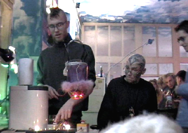

|  |
.......................... VEKKS GONDEL
Über den Köpfen der Besucher schwebend nimmt die sprechende Gondel Bestellungen auf und serviert hand-gemixte Getränke im ganzen Raum. Als dauerhafte Raum-Installation im Kunstraum VEKKS macht dieser Servierroboter immer wieder mit neuen Details auf sich aufmerksam: etwa ein Sprachmodul oder eine eingebaute Kamera, mit welcher der Roboter seine Perspektive des Raumes auf einem Monitor sichtbar macht.
Entstand in Zusammenarbeit von SHIFZ- und VEKKS-Mitgliedern.
|